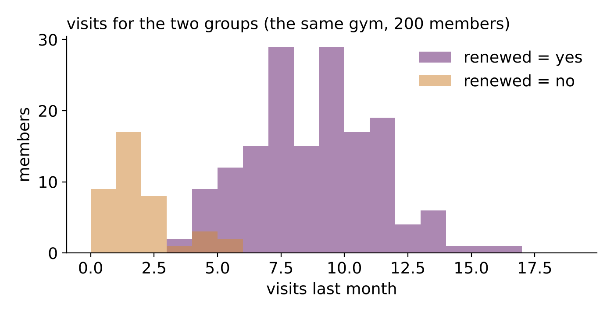

Explore
Before we edit our data, we first need to understand the characteristics of our data. The data exploration phase can be broken into three core questions: What do I have? What's wrong or weird? Does it matter? Your answers to these questions will guide you on decisions you make in the next sections of your project.
What do I have?
How big the data is, what kind of value is in each column, and how the target is split.
What's wrong or weird?
Empty cells, codes standing in for empty cells, and values that are out of range.
Does it matter?
Which of the things you found will affect what the model learns.
Before we can judge anything about our data, we need to know its basic shape: how big it is, what kind of value is in each column, and how the thing we are trying to predict is split.
With our data loaded into a pandas DataFrame, we can get its size using .shape. This gives two numbers: the number of rows (each row is one example, in Bank Marketing one client) and the number of columns (each column is one piece of information about that example).
(45211, 17)
On the Bank Marketing dataset we have 45,211 rows and 17 columns. Write down your own two numbers, because they are the first thing you describe about your dataset in your report.
pandas works out a type for every column when the data is loaded. We can list those types using .dtypes.
age int64 job object balance int64 day int64 contact object ... y object
Here int64 means a whole number, float64 means a number with a decimal point, and object means text. Look down the list for your own data and check that each type matches what you expect. If you expected a column to contain text categories (e.g. a "DayOfWeek" column would be expected to contain ["Monday", "Tuesday", "Wednesday", ...]) but it is actually numerical, take note of this! It can cause unexpected behaviour in future steps.
It is also useful to keep the number columns and the text columns as two separate lists, because the analysis and visualisations we do later depend on the data type. select_dtypes builds these lists for us: include='number' picks out the number columns.
['age', 'balance', 'day', 'duration', 'campaign', 'pdays', 'previous']
On the Bank Marketing dataset this is our list of numerical columns. Look at the names in your own list. Is there anything you would not expect to be a number?
Using exclude='number' gives us everything else, which is the text columns.
['job', 'marital', 'education', 'default', 'housing', 'loan', 'contact', 'month', 'poutcome', 'y']
This is our list of text columns. Your target column will usually appear here if its values are words like yes and no.
.describe() gives a summary of every number column at once: how many values it has, the average (mean), the smallest (min), the largest (max), and the value in the middle when sorted (50%, also called the median).
age balance day duration campaign pdays previous mean 40.9 1362.3 15.8 258.2 2.8 40.2 0.6 50% 39.0 448.0 16.0 180.0 2.0 -1.0 0.0 min 18.0 -8019.0 1.0 0.0 1.0 -1.0 0.0 max 95.0 102127.0 31.0 4918.0 63.0 871.0 275.0
Read the min and max row for each column and ask whether those values are possible. In Bank Marketing, pdays is the number of days since the client was last contacted, and its minimum is −1. A negative number of days is not possible, so −1 must mean something else. The dataset's documentation says it means "never contacted before" (this is explained on the UCI repository page for Bank Marketing, under the column descriptions; check the same page for your own dataset!). Read the min and max of your own columns the same way, and look up any value that seems impossible.
For text columns, .describe() reports different things: how many different values there are (unique), and the most common one (top).
job marital education contact poutcome y unique 12 3 3 2 3 2 top blue-collar married secondary cellular failure no
A text column with a very large number of different values (e.g. a free-text comment, or an ID) will be hard to use later, so take note if you see one.
In a classification problem, the target column holds the categories we want to predict. value_counts() counts how many rows fall into each category, and adding normalize=True gives the same counts as fractions of the whole.
no 39922 yes 5289 no 0.883 yes 0.117
In Bank Marketing, 88% of clients said no and 12% said yes. When one category is much more common than the other, we call the dataset imbalanced. Write down your own split, because it decides which scores you can trust when you build models later.
Real data is rarely clean. Cells can be empty, a number can secretly be a code, and some values can be far outside the normal range. We need to find these things now, because a model will train on whatever it is given, including the problems.
pandas marks an empty cell as NaN (short for "not a number"). .isnull() checks every cell for NaN, and .sum() adds up the count for each column.
age 0 job 288 education 1857 contact 13020 poutcome 36959 y 0
In Bank Marketing, four columns have gaps. Turn each count into a percentage of your total rows (13,020 out of 45,211 is 29%). You will use these percentages in the Prepare stage to decide what to do about each column.
A gap or a strange value is only a problem if it affects what the model learns. The questions in this section help you work out which of the things you found matter, so that you can make a decision about each one.
One histogram per group shows this at a glance. groupby splits the rows by target category, and hist draws one set of bars for each. alpha=0.5 makes the bars see-through, so that you can see where the two groups overlap.

visits looks different for the two groups: the members who did not renew sit to the left, and the members who renewed sit to the right.Try each of your number columns. For each one, write one line: overlaps, or sits apart. A column where the groups sit apart will help the model, and one where they overlap completely will not. Do not expect the gym's clean separation in real data! A useful column usually shifts the two humps a little rather than pulling them apart.